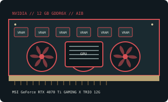

[ NVIDIA // RETAIL AIB GRAPHICS CARD ]
MSI GeForce RTX 4070 Ti GAMING X TRIO 12G
GAMING X TRIO factory-OC, 12 GB GDDR6X; exact board model RTX 4070 Ti GAMING X TRIO 12G.

Recorded board specifications
| Exact retail board / SKU | RTX 4070 Ti GAMING X TRIO 12G — GAMING X TRIO factory-OC, 12 GB GDDR6X |
|---|---|
| GPU | GeForce RTX 4070 Ti (AD104) |
| Memory / bus | 12 GB GDDR6X; 192-bit memory interface. This is the board-specific capacity, not a different-capacity sibling. |
| Host interface | PCI Express 4.0 x16 card; compatible with PCIe x16 slots of earlier generations, subject to system and firmware support. |
| Board power / PSU | 285 W reference-class board power; MSI recommends a 750 W system PSU. PSU guidance is a system recommendation, not the GPU’s power draw; final load varies with the rest of the system and factory settings. |
| Auxiliary power | 1 × 16-pin 12VHPWR; ensure adapter/cable is fully inserted and not sharply bent at the socket |
| Card envelope / slots | 337 × 140 × 62 mm; about 3-slot; the listed length/thickness apply to this exact SKU and should be checked against case clearance, adjacent slots, and power-cable bend space. |
| Display outputs | 1 × HDMI 2.1a and 3 × DisplayPort 1.4a. Output socket count and simultaneous-display limits are not necessarily the same. |
| Vendor-first index | NVIDIA retail and GPU vendor index |
Variant and fit caveats
This exact GAMING X TRIO 12G board is 337 mm long and about 3 slots thick; it is not the more compact Ventus variant. The single 16-pin input and generous case/cable clearance should be planned before installation.
Partner-card dimensions, clocks, cooling, power input, and port layout are not universal specifications for the GPU family. Confirm the exact model number on the board label and current manufacturer data before purchasing, fitting a PSU cable, or selecting a case.
Manufacturer and reference links
- MSI GeForce RTX 4070 Ti GAMING X TRIO 12G specificationsManufacturer product/specification page for the named retail board; confirm current revision and regional listing.
- TechPowerUp GeForce RTX 4070 Ti technical referenceIndependent technical reference for this board or GPU family; partner-board dimensions and connectors should be cross-checked against the manufacturer.